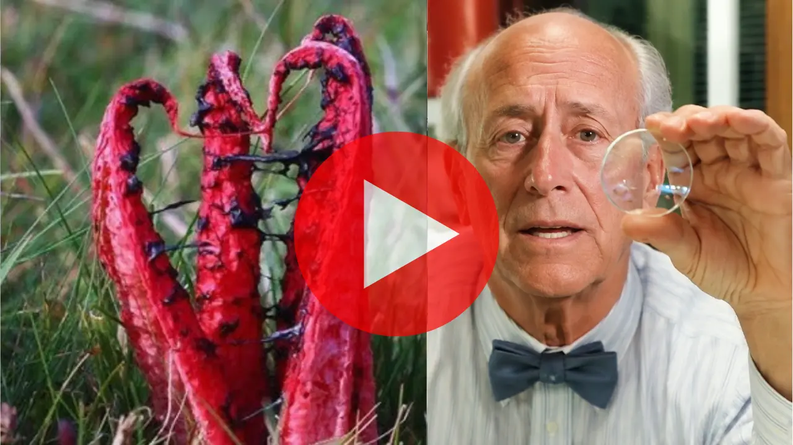

Najprv je ťažké prečítať nápisy. Potom sa rozmažú dopravné značky. Neskôr prestanete šoférovať v noci. A jedného dňa — bez toho, aby ste si to všimli — vás bude musieť niekto sprevádzať všade, kam pôjdete.
Strata zraku neprichádza náhle. Postupuje pomaly a potichu — až sa jedného rána zobudíte a zistíte, že z diaľky už nespoznáte tváre svojich vnúčat, nedokážete prečítať lekársky predpis a o tom, čo môžete a nemôžete robiť, rozhodujú iní. A najtragickejšie je, že to nie je nevyhnutné.
Očný lekár Dr. Bush s desaťročiami klinických skúseností si začal klásť otázky, ktoré jeho kolegovia nikdy nepoložili. Prečo niektorí ľudia rýchlo strácajú zrak, zatiaľ čo iní vidia dokonale až do vysokého veku? Aký je rozdiel v ich očiach?
Jeho objav otriasol lekárskou komunitou. Výskumníci z Oxfordskej univerzity po analýze viac než 12 000 pacientov potvrdili jeho predpoklad: kvalita zraku priamo súvisí so stavom drobných ciev v oku. Keď sa tieto cievy upchajú, očné bunky nedostávajú dostatok kyslíka a živín — a potichu, deň za dňom začínajú odumierať.
Tento proces je tichý a postupný. Nebolí. Neprejavuje sa zjavnými príznakmi, kým poškodenie nepokročí. Každý deň bez zásahu zvyšuje počet odumretých buniek — a približuje vás k bodu, keď už nebude možné nič napraviť.

V tom istom výskume Dr. Bush identifikoval niečo výnimočné: jednoduchý postup s prírodným červeným koreňom, ktorý pôsobí priamo na drobné cievy v oku — uvoľňuje upchatie, odstraňuje nahromadené škodlivé usadeniny a umožňuje bunkám opäť prijímať kyslík a živiny.
Zdokumentované výsledky prekvapili aj samotných výskumníkov: pacienti, ktorí už nedokázali čítať bez okuliarov, mali problémy so šoférovaním alebo nedokázali rozoznať tváre svojich blízkych, zaznamenali zlepšenie už počas prvých týždňov.
Dr. Bush sa rozhodol zverejniť tento objav v bezplatnom videu, ktoré podrobne vysvetľuje všetko: odkiaľ tento koreň pochádza, ako presne pôsobí na očné cievy a — čo je najdôležitejšie — ako ho správne používať, aby sa dosiahli výsledky zaznamenané u pacientov.
Toto video obsahuje všetko, čo potrebujete vedieť. Nepotrebujete termín, recept ani drahé zákroky. Len úplné informácie vysvetlené zrozumiteľne a prístupne, aby ste mohli konať ešte dnes, skôr než sa poškodenie stane nezvratným.